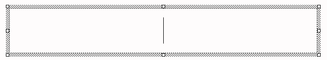
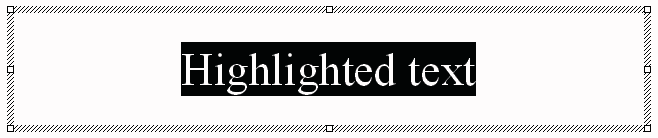

[ Contents ] [ Previous ] [ Next ]

Text and graphics are treated similarly when editing in PowerPoint.
To begin any editing, it is first necessary to select the object
being edited. This can be done with a mouse click. When editing,
it is important to pay attention to the borders of the
object being edited. Some basic border indicators are shown below:

There are four basic types of editing: Moving, Resizing, Adding,
and Deleting. Each of these is discussed briefly below:
To move an object, you must select the border of the object so that the handle boxes in the corner of the object appear as shown above.
The selection is somewhat different for text and graphics objects. With graphics objects a single click on the object will make this border appear. For text, it is necessary to first click somewhere inside the text box. This first click will make the thatched border of the textbox appear.

A second mouse click on the thatched border will then change the border to a dotted pattern.

To move the object "Click and Hold" anywhere on the highlighted border EXCEPT on one of the squares or handles (the handles are for resizing). To place the object in the new position, simply drag the object to the desired location and release the mouse button.
The procedure for resizing is very similar to the procedure for moving an object. The only difference is where the border is clicked. To resize an object you MUST grab one of the handles or squares located around the selected border. Note how the cursor changes when you pass directly over a handle. This cursor change indicates that the square can be used to change the shape of the object.
To resize the object, simply "Click and Hold" one
of the handles and drag it to the appropriate shape. Note that
clicking and holding one of the four corner handles allows you
to change both length and height of the box in the same move.
This can be important when it is important to keep the object
in proportion as it moves.
Adding text to an existing textbox is a simple as clicking
once on the box and then positioning the cursor inside the box.
Editing text inside the box is similar to a word processor: highlight
the text to be edited by clicking and dragging the mouse over
the text to be changed. This highlighting is shown below:

Normally, graphics are not edited. There are some cases, however, when editing a Clip Art image would improve the quality of the presentation. Clip Art can be edited using the "Ungroup" option in the "Draw" menu. The Group links a whole series of smaller graphic objects into a single graphic object. When the "Ungroup" command is used, the grouping is eliminated and each of the smaller objects within the Clip Art can then be altered individually. After you have edited the Clip Art, you can reapply the grouping by selecting all of the graphic objects you want to group together (using the click and drag method), and then select the "Group" option from the "Draw" Menu.
To delete a graphic or text object, simply select the object
by clicking on it (make sure the handles appear in the border
) and then press the "Delete" key on your keyboard.
If you make a mistake and delete something you did not want to,
you can undo the delete by selecting the "Undo" option
from the "Edit" menu or use the undo icon on the standard
PowerPoint Toolbar that looks like this:  .
.